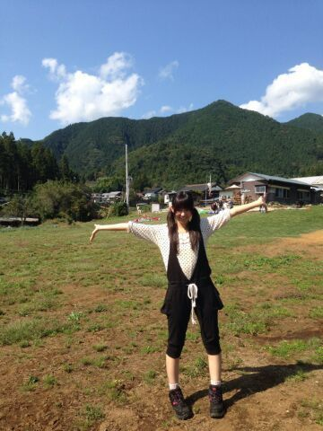

| 2013/12 02 Mon | ひめたん大図鑑57(2012年5 月) |
ひめたんは元気です！

どーん！
とゆーことで
昨日の乃木どこ観てくださったかなー？
なんか痛々しいとゆーか
お見苦しい画を
大変失礼いたしました(´・ω・｀)
コメント読んでると
なんだかみなさーんに心配してもらったみたいで
ちょっと嬉しかったよー♪♪
でもね全然大丈夫！
とゆーか顔は打ってないのよー！
あっちなみに写めは個人PVの時のもの
景色めっちゃきれいでしょ＼( ^O^ )／
◎12/3(火) Rの法則
◎12/4(水) FNS歌謡祭
チェックよろしくお願いします！

テスト週間中は質問返しならぬ
ひめたん大図鑑をお届けします！
はじめての方は
なんじゃこれーって思いながら読んでみてね＊
ひめたん大図鑑とは何か。それは、いわゆる
「過去の質問返しをまとめたもの」って
感じかな
今回は2012年5月の記事のもの。
１年半か......通りで解答が幼いわけだ。

宿題に出してた大阪みやげ教えてくださーい!の回答(^ω^)
ご協力ありがとうございました♪
1178
 大阪のお土産で一度は食べてほしいのは551蓬莱の豚まんです
大阪のお土産で一度は食べてほしいのは551蓬莱の豚まんです
1179
やっぱたこ焼きとかですか(笑)?
1180
定番といえば「551蓬莱の豚まん」かな
1181
大阪行った時はたいてい蓬莱551のぶたまんを買うよ♪
1182
「たこ焼き」でしょ!!
1183
551の肉まんかなあ(^_^)
1184
じゃがりこタコ焼き味とかはオススメです。
1185
ベタだけど、551の蓬莱かな♪
1186
たこ焼きぐらいしか思いつかないやσ(^_^;)ww
1187
たこべえってお菓子おいしいよ!
みなさんご協力ありがとうございましーた♪
来た意見をあえて全部載せるのが中元流どや。
おみやげにはできんかったけど、ひめたん自身が食べれたけ満足∩^ω^∩わら
1188
2ndのアンダーの曲はどんな曲なのかな?
1189
ちゅーしちゃうぞはでるかな?
1190
ひめたんの個別PVかわぃぃ♪(/ω＼*)服LISLISA?
1191
撮影で大変だったことは('・ω・`)?
1192
デートPVおもしろそうやなw普段もチャットとかするん?笑
の答えを交えつつ。
今回は33人全員がデートってシチュエーションなのよ。
だからさすがにサンプラーはできなかったのよね('・・`)
今回のテーマはずばり!
チャット!!!
いやーチャットゆーてメールのはやりとりするんだけどね
テレビ画面で映像をつかっての本格的なチャットは初体験でしたよ♪
チャットいいねー楽しいしょチャット(o>ω<o)
みなさんもお友達や大好きな人やひめたんとチャットするしかー!
1193
ひめたんの好きな男性のタイプ教えて!
さほど理想は高くないですよー。
優しくて、甘えさせてくれる、お兄ちゃんみたいな人(^ω^)!
1194
茶髪と黒髪どっちが好きー?
似合ってればどっちもかっこいい(^^)!
1195
男の人の髪は短い方が好き?それとも長い方が好き?
これまたねー、似合ってればかっこいいんだよねこれが。
欲を言うなら、おいでシャンプーごほっごほごほごほっ
シャンプーの香りがねーとかハードルあげてみる。
1196
スウィーツが好きな男性＝『スウィーツ男子』ひめたん的にどう思う?
ひめたんがスイーツ女子だから、お似合いだぬ♪
え?そんなこと聞いてないって??わら(^ω^)
1197
僕は頭痛持ちでたまに偏頭痛が起こるんですけど、ひめたんってそうゆうの無いですか?
偏頭痛は起こらないけど、緊張したり環境が変わったらすぐお腹いたくなります(>_<)
偏頭痛持ちの友達が辛いーって言ってたー...
1198
●●●とひめたんは通勤通学中隣にひめたんが座ってきた。しばらくするとひめたんが居眠り●●●によりかかってしまうその時ひめたんは?
1.普通に起こして欲しい
2.「ごめんね、俺の方こそよりかかってしまって」とひめたんを気づかうキザな台詞をはきながら起こして欲しい
3.「ひめたん、そんな寝方してると写真とられちゃうよ」
なんとタケシは隣に座った女の子が乃木坂のひめたんだということに気がついていたのだ
自分の存在に気づいてくれて嬉しさのあまりニヤニヤしながら起きた
その後サインをねだられた
4.せっかくいい気持ちで寝ているのだから起こさないで欲しい
5.その他ひめたんの好きな答えをどうぞ
んー1ばんかなあ(*^^*)
ちゃっかり添い寝してもらっても全然構わないーと言いたいところですが
きっと寝顔はひどいんだよね。相当。わら。
だから、やっぱり即起こしてくださーい♪♪
ひめたんのブログの
コメント欄下２ケタに46を踏んだ方へ
手書きでコメ返するコーナー
＼ ひめたん46 ／

あっそうそう
岩手ロケ行った時にブログ書こうと思って
すっかり忘れてたけど
星がとーってもきれいでした＊
(＊´・ω・＊)
コメント(342)
2013/12/02 23:36